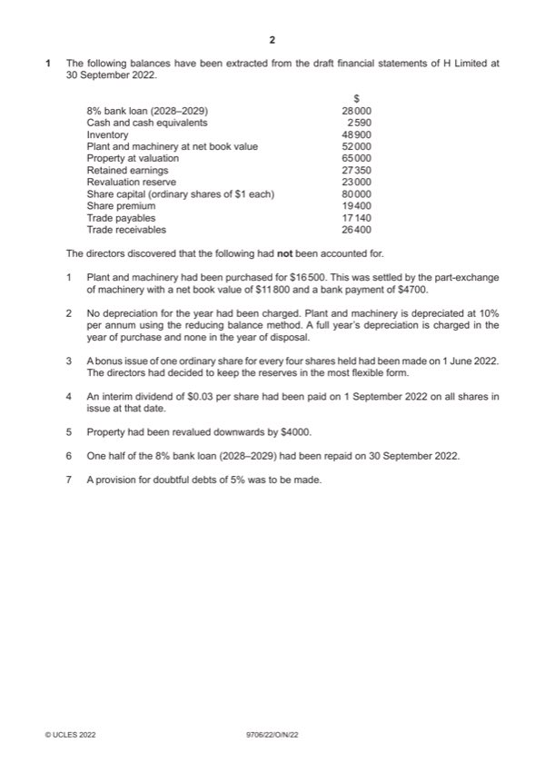

Question 1

Original paper page 2
Part 1(a) — solution
Debit Credit 3
$ $
Share premium 19 400 (1)
Retained earnings 600 (1)
(Ordinary) Share capital 20 000 (1)
Mark points
- Include the ideas shown in the solution above.
Part 1(b) — solution
$51 030 (4) W1 4
W1
$
Balance b/d 52 000
Addition 16 500 (1)
Disposal (11 800) (1)
Mark points
- Include the ideas shown in the solution above.
Part 1(c) — solution
($19 110) (4) W1 4
W1
$
Balance b/d 2 590
Plant and machinery (4 700) (1)
Dividend (3 000) (1)
Loan repayment (14 000) (1)
Adjusted balance (19 110) (1)
2022 Page 7 of 18
9706/22 Cambridge International AS & A Level – Mark Scheme October/November 2022
Mark points
- Include the ideas shown in the solution above.
Part 1(d) — solution
$16 760 (5) W1 5
W1
$
Balance b/d 27 350
Depreciation (5 670) (1) OF
Bonus issue (600) (1) OF
Dividend (3 000) (1) OF
Provision for doubtful debts (1 320) (1)
Adjusted balance 16 760 (1)
2022 Page 8 of 18
9706/22 Cambridge International AS & A Level – Mark Scheme October/November 2022
Mark points
- Include the ideas shown in the solution above.
Part 1(e) — solution
H Limited 8
Statement of Financial Position at 30 September 2022
$
Non-current assets
Property 61 000
Plant and machinery 51 030
112 030 (1)
Current assets
Inventory 48 900
Trade receivables 25 080 (1) OF
Mark points
- Include the ideas shown in the solution above.
Part 1(f) — solution
Capital reserves are created as a result of non-trading activities (1) whereas revenue reserves are created by transfer from 4
profits / trading activities (1).
Capital reserves cannot be used to pay shareholder dividends (1) whereas revenue reserves can be used to pay
shareholder dividends (1).
Accept other valid responses.
Mark points
- Include the ideas shown in the solution above.
Part 1(g) — solution
Conforms with the prudence concept (1) ensuring that a potential loss is recognised when it becomes apparent / ensuring 2
that current assets/profits are not overstated (1)
Accept other valid responses.
2022 Page 10 of 18
9706/22 Cambridge International AS & A Level – Mark Scheme October/November 2022
Mark points
- Include the ideas shown in the solution above.